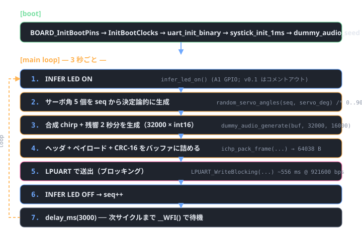
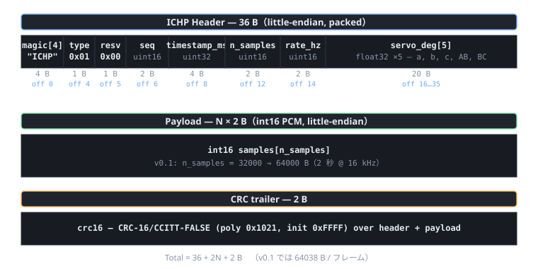

構成
各 MCUXpresso プロジェクトは projects/XX_*/ ディレクトリに分かれ、共通ドライバ・ヘッダは shared/ に集約。プロジェクト側は shared/include を Include パスに、必要な shared/source/*.c をビルドに含める形で構成する。
firmware/
├── shared/ プロジェクト共通の C コード
│ ├── include/
│ │ ├── ichiping_frame.h フレーム形式（PC 側と共有する単一の真実）
│ │ ├── dummy_audio.h 合成 chirp + 残響ジェネレータ
│ │ ├── servo_driver.h 共通サーボ API（PCA9685 / LU9685 切替）
│ │ ├── pca9685.h PCA9685 ネイティブ API（16ch, NXP）
│ │ ├── lu9685.h LU9685 ネイティブ API（20ch, 互換品）
│ │ ├── ili9341.h ILI9341 240×320 RGB565 TFT API
│ │ └── lv_port.h LVGL ポート公開関数
│ └── source/
│ ├── ichiping_frame.c ヘッダ + CRC-16/CCITT パッカー
│ ├── dummy_audio.c 合成 chirp 200→8 kHz + 残響
│ ├── pca9685.c PCA9685 ドライバ（PWM tick burst write）
│ ├── lu9685.c LU9685 ドライバ（角度バイト + bulk update）
│ ├── ili9341.c ILI9341 ドライバ（SPI + 5x7 ASCII フォント）
│ └── lv_port_disp.c LVGL ↔ ILI9341 glue（partial render）
├── projects/ MCUXpresso プロジェクトを 1 つずつ独立に
│ ├── 01_dummy_emitter/
│ │ ├── main.c SysTick + LPUART + 3 秒周期フレーム送信
│ │ └── README.md MCUXpresso インポート手順
│ ├── 02_servo_test/
│ │ ├── main.c servo_driver.h 経由で PCA9685/LU9685 両対応
│ │ └── README.md
│ ├── 03_ili9341_test/
│ │ ├── main.c ILI9341 単体の 5 フェーズ描画デモ
│ │ └── README.md
│ ├── 04_lvgl_test/
│ │ ├── main.c LVGL v9 統合 + IchiPing 状態 UI モック
│ │ └── README.md
│ └── 05_usb_cdc_emitter/
│ ├── main.c USB CDC ACM 経由で ICHP フレーム送信
│ └── README.md
├── host_build/ ホスト (gcc/MinGW) でビルドする足場
│ ├── Makefile .so/.dll を作って ctypes 突合テストに使う
│ └── README.md
└── README.md / README.html本リポは 5 つの独立ファームを提供する。それぞれ別 MCUXpresso プロジェクト:
| # | ディレクトリ | 用途 | SDK ベース |
|---|---|---|---|
| 1 | projects/01_dummy_emitter |
シリアル疎通とフレーム形式の確立（v0.1 本番） | lpuart/polling_transfer |
| 2 | projects/02_servo_test |
PCA9685 または LU9685 + SG90 ×5 の動作確認（v0.4 準備） | lpi2c/polling_master |
| 3 | projects/03_ili9341_test |
TFT 配線確認 + 5 フェーズ最小描画デモ（v1.0 準備） | lpspi/polling_b2b |
| 4 | projects/04_lvgl_test |
LVGL v9 のポート確立 + IchiPing 状態 UI モック | lpspi/polling_b2b + middleware/lvgl |
| 5 | projects/05_usb_cdc_emitter |
USB CDC ACM で 1 フレーム ~50 ms（v0.3 高速化） | usb_examples/usb_device_cdc_vcom |
詳細なインポート手順は 各プロジェクトの README.md を参照。
サーボドライバの選択
Servo test は PCA9685（NXP, 16 ch）と LU9685-20CU（中国製, 20 ch）のどちらでも
同じコードでビルドできる。firmware/shared/include/servo_driver.h
がビルド時シンボルでバックエンドを切り替える:
| バックエンドシンボル | チップ | チャネル数 | I²C アドレス | キャリブ | 必要なソース |
|---|---|---|---|---|---|
SERVO_BACKEND_PCA9685（既定） |
PCA9685 | 16 | 0x40（A0..A5 で 0x40..0x7F） | パルス幅を MIN/MAX_TICK で校正 | pca9685.c |
SERVO_BACKEND_LU9685_I2C |
LU9685-20CU | 20 | 0x00（ジャンパで 0x00..0x1F） | チップが角度→パルス変換するので不要 | lu9685.c |
main_servo_test.c は servo_init / servo_set_deg /
servo_set_first_n_deg / servo_all_off の 共通 API のみ呼ぶので、
ハード差し替え時のコード変更はゼロ（Preprocessor シンボルを変えるだけ）。
ビルド手順（MCUXpresso IDE / MCUXpresso for VS Code）
各プロジェクトのインポート手順は 対応する projects/XX_*/README.md に詳細を書いた。共通の前提は:
- MCUXpresso SDK for FRDM-MCXN947 11.9 以降を
frdmmcxn947用にダウンロード - SDK Wizard でベース例を選び（各 README の §1〜2 参照）、新規プロジェクトを作成
- プロジェクトの
main.cをfirmware/projects/XX_*/main.cで置換 - 必要な共通ソース（
firmware/shared/source/*.c）をプロジェクトに追加 - Include パスに
${ProjDirPath}/../firmware/shared/includeを追加 - プロジェクトごとの Preprocessor / Pin Mux / 外部依存（LVGL や USB stack）を README 通りに設定
- ビルド → 書込
| プロジェクト | 詳細 README |
|---|---|
| 01_dummy_emitter | projects/01_dummy_emitter/README.md |
| 02_servo_test | projects/02_servo_test/README.md |
| 03_ili9341_test | projects/03_ili9341_test/README.md |
| 04_lvgl_test | projects/04_lvgl_test/README.md |
| 05_usb_cdc_emitter | projects/05_usb_cdc_emitter/README.md |
シリアル設定
| ファーム | ボーレート | フォーマット | 受け側 |
|---|---|---|---|
| 01_dummy_emitter | 921600 bps | バイナリ ICHP フレーム、8N1 | pc/receiver.py で受ける（端末ソフトでは開かない） |
| 02_servo_test | 115200 bps | テキスト（PRINTF ステータス）、8N1 | TeraTerm / PuTTY / VS Code Serial Monitor で OK |
| 03_ili9341_test | 115200 bps | テキスト（PRINTF）、8N1 | 同上 |
| 04_lvgl_test | 115200 bps | テキスト + LVGL 内蔵パフォーマンスモニタ | 同上 |
| 05_usb_cdc_emitter | N/A (USB CDC、baud 無視) | バイナリ ICHP フレーム | pc/receiver.py で受ける |
動作シーケンス（Dummy emitter）

動作シーケンス（Servo test）
[boot] → BOARD init → SysTick 1ms → LPI2C4 init → pca9685_init(50Hz)
│
▼
[main loop] ← 1 サイクル ≈ 11 秒
Phase 1 — 同期ウェイポイント:
all → 0° hold 1.0 s
all → 90° hold 1.0 s
all → 180° hold 1.0 s
all → 0° hold 0.5 s
Phase 2 — ソロスイープ (5 ch 順番):
ch_n → 180° hold 1.0 s
ch_n → 0° hold 0.5 s各動作は OpenSDA UART (115200 bps) に PRINTF で進捗を出す。観測は VS Code 拡張 Serial Monitor か TeraTerm。
フレーム形式
ichiping_frame.h が単一の真実（single source of truth）。PC 側は
pc/ichp_frame.py の HEADER_FMT を同期させる。
ドリフトすると CRC が通らず無音状態になるため、ヘッダ変更時は必ず両方を更新し
python -m unittest pc.test_frame_format -v で 9 テスト全パスを確認。

TODO（実ハード接続フェーズ）
v0.2 以降の作業。詳細は tasks.html の IP-0.2.x を参照。
BOARD_LED_INFER_*を MCUXpresso Config Tools で定義 →infer_led_on/off()のGPIO_PinWriteを有効化dummy_audio_generate→ I²S SAI1 RX からの DMA リングバッファ受信に置き換え- サーボ角は PCA9685 への現在指令角度を返すように接続
- OpenSDA UART → USB CDC にアップグレード（フレーム転送 556 ms → 50 ms 程度）
- ホスト送 → MCU 受向きを足し、PC からのコマンド（収集セッション開始/サーボ角度指定）を受け付ける
ichiping_frame.c / dummy_audio.c は MCUXpresso SDK 非依存（<stdint.h>, <string.h>, <math.h> のみ）。
gcc / MSVC で .dll/.so 化し、Python から ctypes で呼んで PC 側パッカーと突合テストできる（タスク IP-0.1.7）。
参考
- バスとピンの割当: hardware/wiring.html
- 視覚配線図: hardware/wiring.svg
- システム全体仕様: docs/spec.html
- PC 側受信スクリプト: pc/README.html
{kind=link}